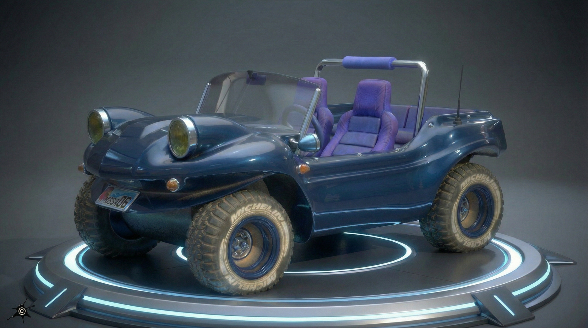
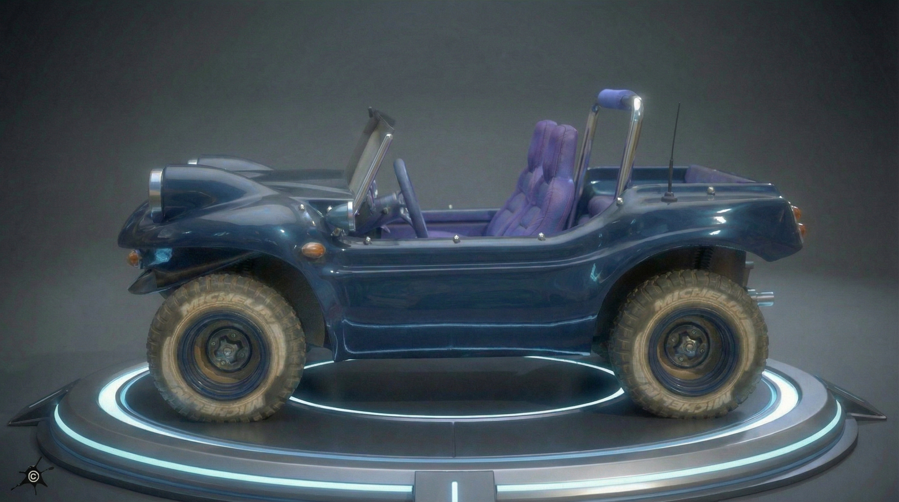
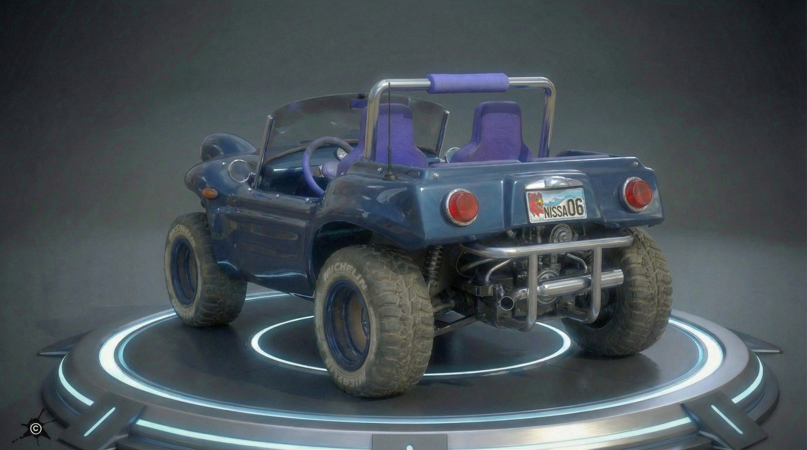
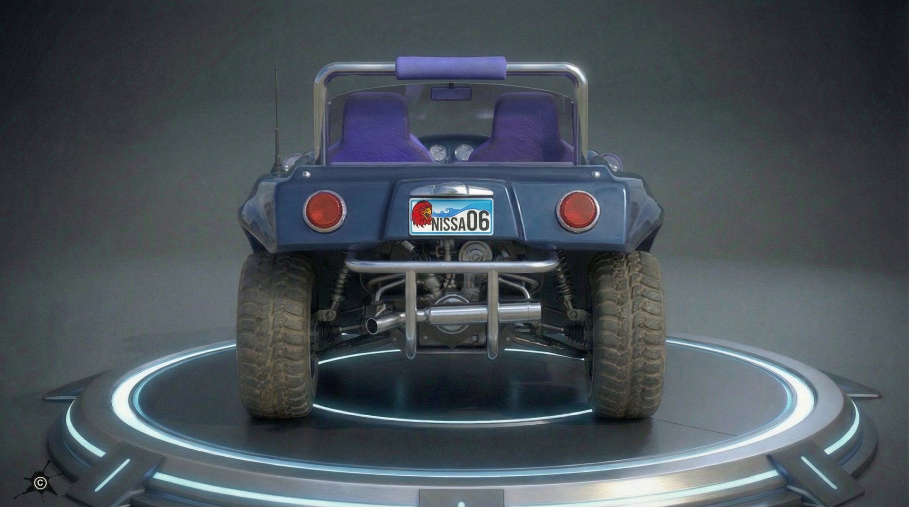
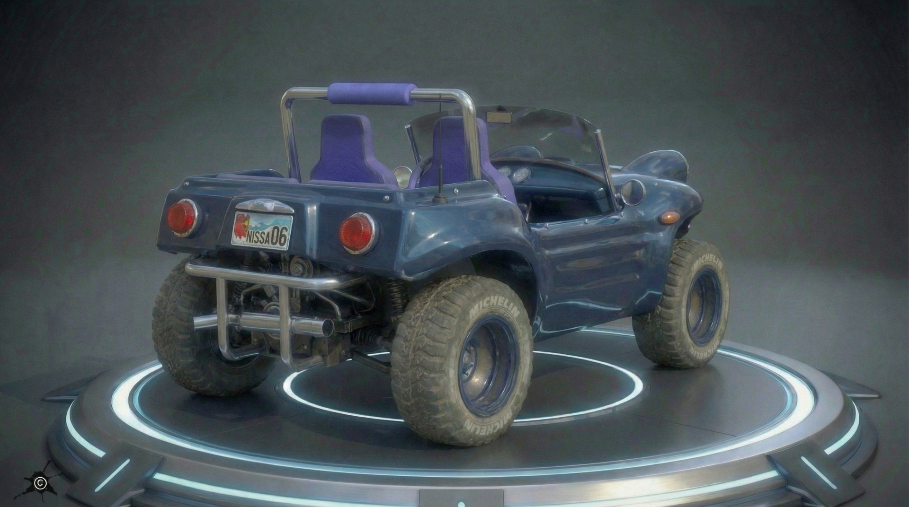
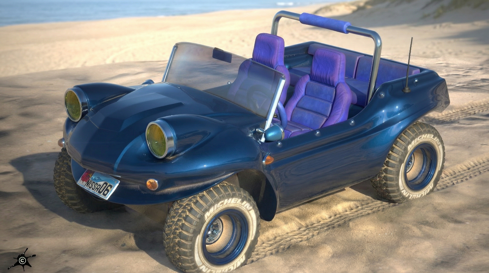
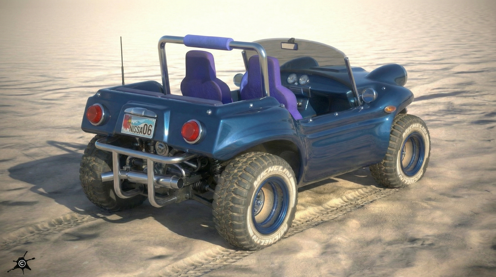
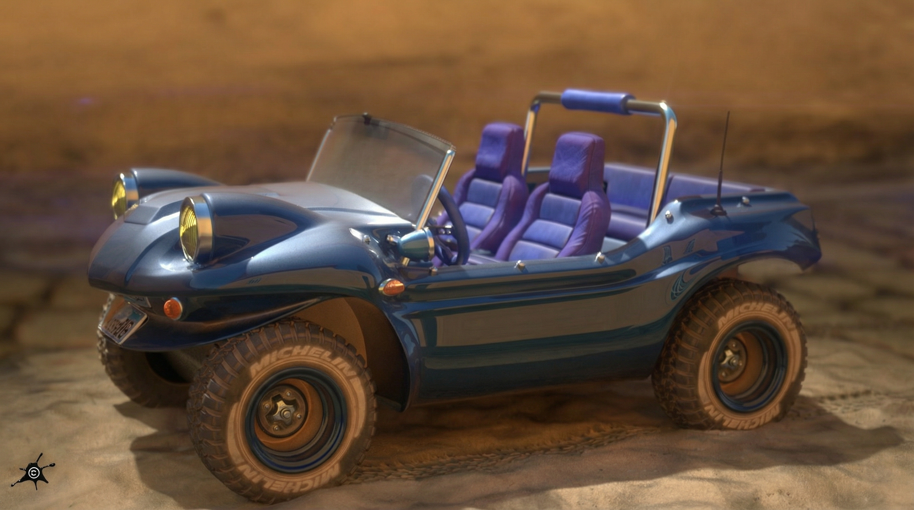

Hard Surface Modeling • UV Mapping • PBR Texturing • HDRI Lighting
Iray Rendering • AI-Generated Animation





Iray was used to render multiple views of the car in a futuristic indoor environment, distinct from the beach setting. These renders served as the basis for the animated turnaround shown at the top of the page. Above are the iterative multi-view renders, and below are the full-screen images produced with Iray.

I have a strong affinity for buggy cars, which led me to create this Beach Buggy entirely from scratch, based on multiple reference images of similar vehicles. This project was also conceived as a hard-surface modeling exercise, with a focus on clean topology, accurate forms, and well-controlled details. All polygon modeling and UV mapping were completed in Blender. Substance 3D was used for map baking and texturing, while ZBrush was used to sculpt high-detail elements integrated into the normal maps.
The license plate graphics were created in Adobe Photoshop and Adobe Illustrator. I also experimented with various HDR environment maps and handled the final rendering in Iray. The main objective of this project was to accurately reproduce the distinctive sparkling blue paint seen on the reference vehicles.

